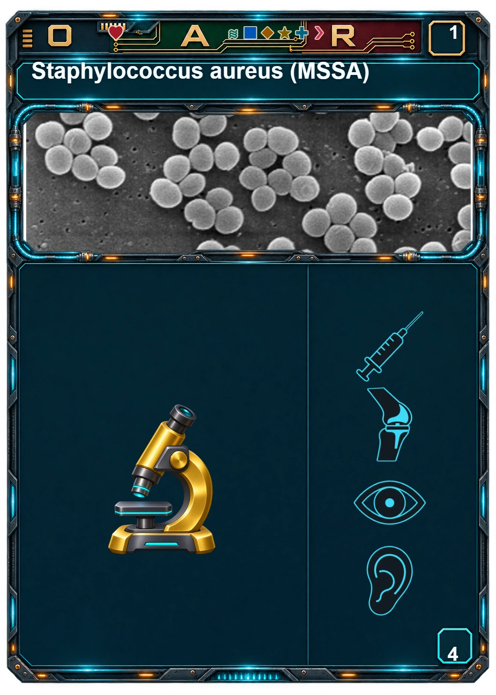

Practice a turn
Read the card guide, then try the practice questions.
How to read a playing card

O / A / R at the top
Find the antibiotic’s symbol in the bacterium’s rail. The symbol identifies the drug. The letter tells you what the match does.
- O · Optimal
- The flucloxacillin heart on B31 allows a local tuck. An eligible on-play antibiotic can choose one distant Optimal target instead of its local attack.
- A · Active
- The vancomycin square on B31 allows a tuck at the same site only. Follow any limits on the antibiotic card.
- R · Resistance
- On B32 MRSA, the flucloxacillin heart is in R. It blocks the tuck. Playing the matching antibiotic at that site can trigger the printed reaction once per copy per game.
- Symbol absent
- That antibiotic has no matching tuck or R reaction against this card.
Synergy near the bottom
B31 has 4 base VP in the bottom-right badge. Its Synergy box adds +2 VP while it is visible at IV Site, Prosthetic Joint, Eye, or Middle Ear. A slash lists alternatives for one award. If a card has two separate conditions, both can score when met. The site’s own tag bonus can also apply.